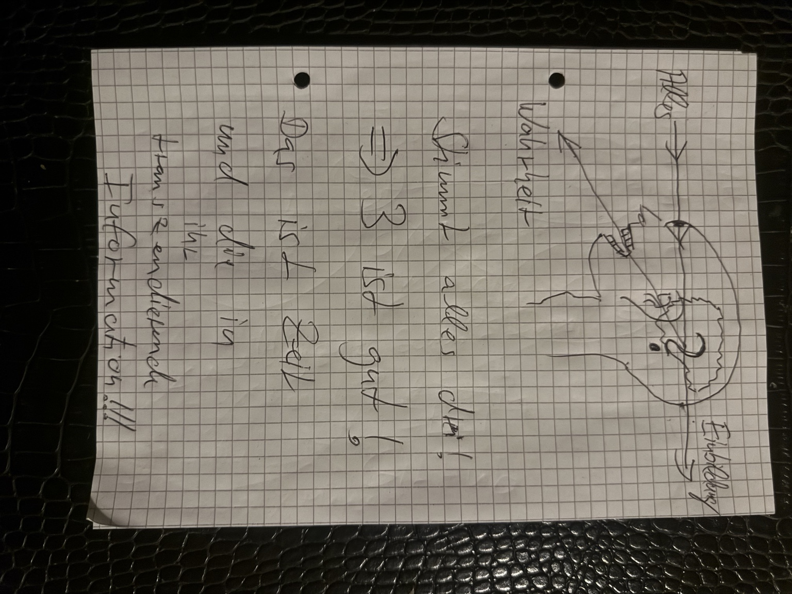
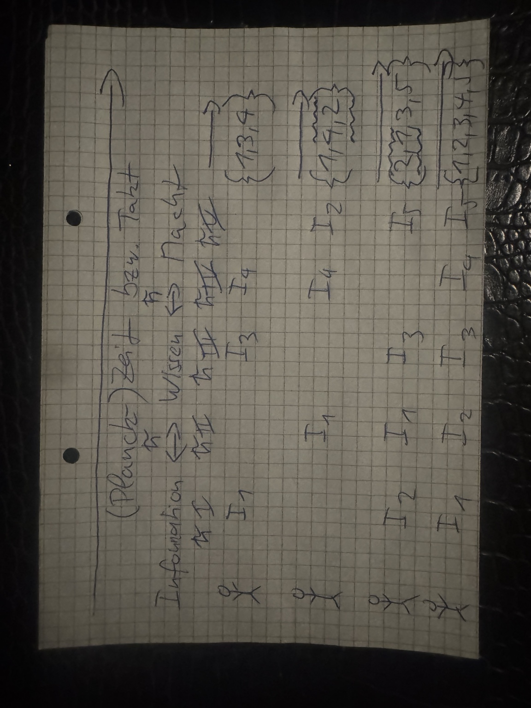
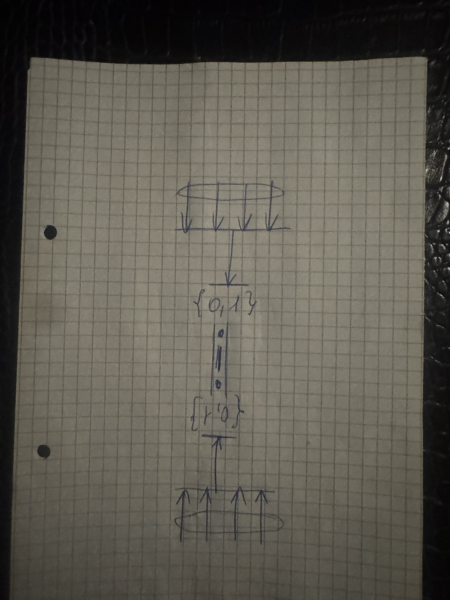
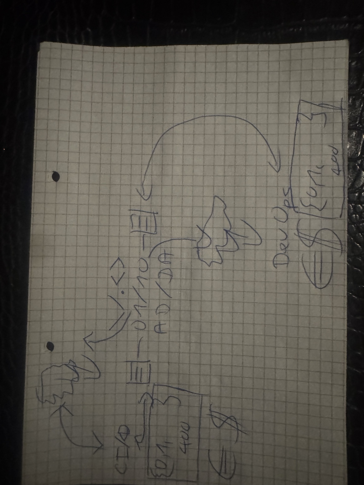
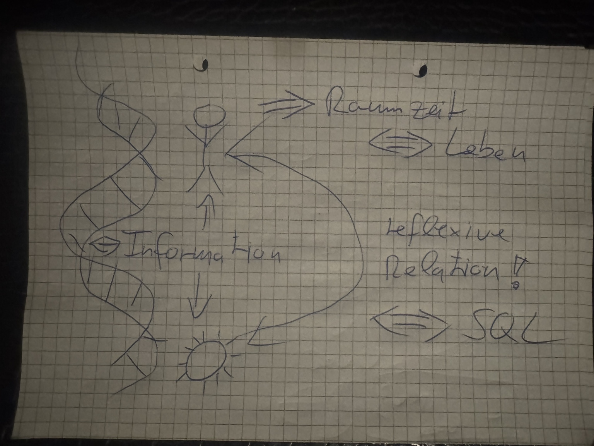
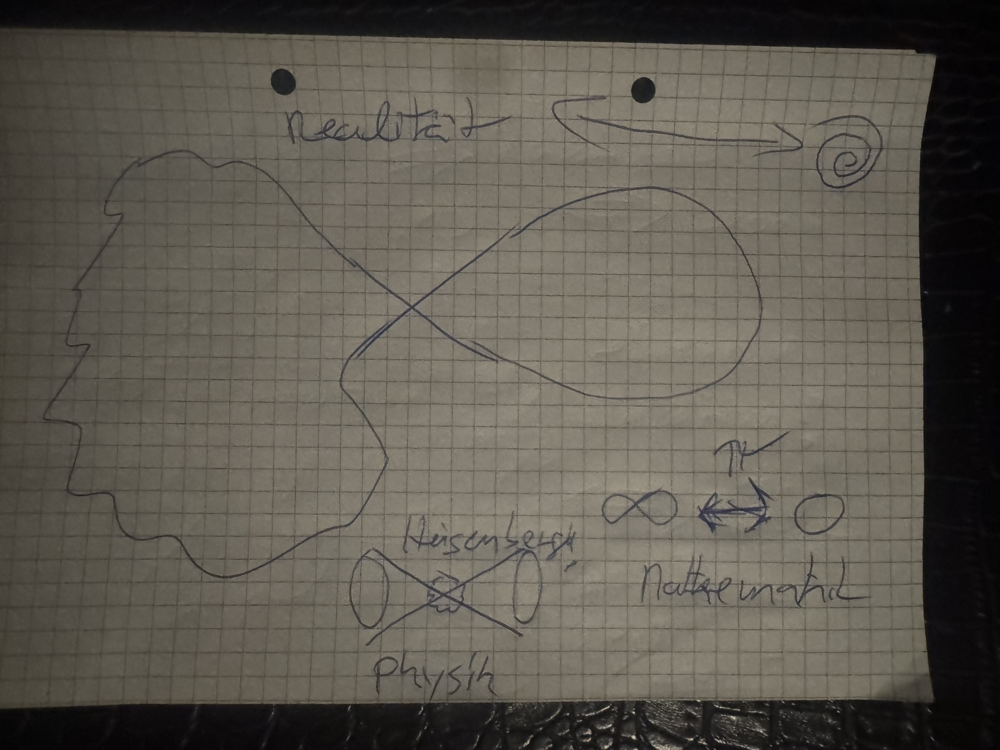

Ingolf Lohmann · Dokumentationssatz vom 2. Oktober 2026
QIK-VRT: handschriftliche Originalskizzen
Sechs zusammengehörige Originalbilder zur universal anschlussfähigen Erläuterung der Wirkungsweise von QIK VRT.
Handschriftliche Skizzen: Ingolf Lohmann. Redaktion, Katalogisierung und Prüfsummen: OpenAI Codex. Die Originaldateien sind unverändert.
Herkunft und Entstehungsweg · Archivmanifest · Prüfsummen

Kopfprofil mit Pfeilen zwischen „Alles“, „Einbildung“ und „Wahrheit“; ergänzende Notizen zu Zeit und Information.

Zeit-/Takt-Skizze mit „Information ↔ Wissen ↔ Macht“, I-Indizes und unterschiedlich angeordneten Zahlenmengen.

Gegenläufige Pfeile bündeln sich auf eine zentrale Verbindung zwischen den binären Mengen {0,1} und {1,0}.

Rückkopplungsskizze mit „AD/DA“, „CFO“, „DevOps“, binären Angaben, „400“ sowie Euro- und Dollarzeichen.

Doppelhelix, Mensch und Sonne mit Informationspfeilen; Beschriftungen zu Raumzeit, Leben, reflexiver Relation und SQL.

Kopfprofil mit Schleife und Spirale; Notizen zu Realität, Mathematik (∞, 0) sowie Physik und Heisenberg.